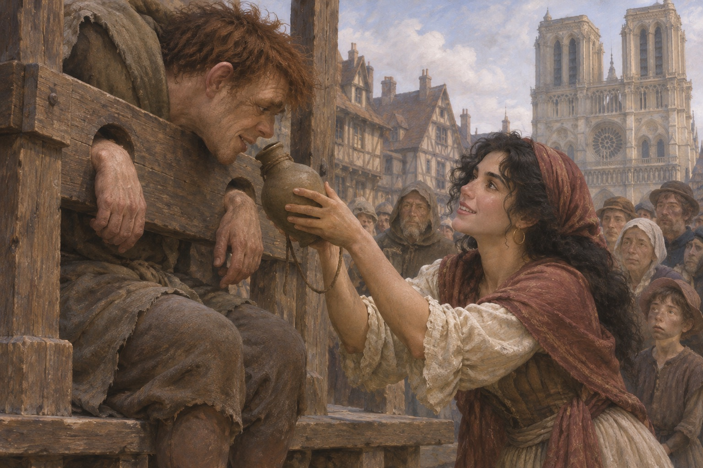

愚人节
全巴黎的人挤在司法宫看神秘剧。剧作者是甘果瓦，一个穷诗人，剧演到一半，观众全跑去看愚人王游行。选出来的人叫卡西莫多，圣母院敲钟人，独眼，驼背，瘸腿。人们给他戴上纸王冠，抬着走街。他笑的时候，没有人知道他为什么笑。剧演到一半，观众听见外面在放炮，全跑了。甘果瓦站在台上，说：你们回来。没有人回来。剧演到一半，观众听见外面放炮，全跑了。甘果瓦站在台上说：你们回来。没有人回来。
跳舞的姑娘
广场上有个吉普赛姑娘跳舞，叫爱斯梅拉达。她转起来的时候，裙子像一朵花。围观的人里有一个穿黑袍的教士，一直盯着她看。他看着她，手在发抖。他后来跟人说：那是我第一次恨一个人，恨她让我想活。她跳舞的时候，脚边放着一块小地毯，一只小山羊在旁边敲鼓。有人扔钱，她弯腰捡，头发垂下来。她跳舞的时候脚边放着小地毯，一只小山羊在旁边敲鼓，有人往地上扔钱。
被抢
夜里，卡西莫多和几个人奉命去抢爱斯梅拉达。一个骑兵队长路过，拔剑救了她，叫弗比斯。她抬头看他，看了很久。卡西莫多被抓住，第二天绑在广场的刑柱上，挨鞭子，讨水喝，没有人给。弗比斯有个未婚妻，叫百合花，是城里有名的美人。弗比斯说：你没事吧。她说：没事。他说：我送你回去。她说：不用。他说：那我看着你走。她走了，回头看了两次。
一口水
他渴得嗓子冒烟，喊：水。人群笑。那个吉普赛姑娘走过来，拿着一只水壶，喂他喝水。他喝完，抬起头，看见她的脸。他这一辈子第一次哭。他说：谢谢。她说：不用。他说：你为什么给我水。她说：因为你渴。他说：他们都笑我。她说：我不笑。他把这句话记住了。

甘果瓦的婚礼
甘果瓦误入乞丐的地盘，按规矩要被吊死，除非有女人肯嫁他。爱斯梅拉达说：我嫁他。他们假结婚，她给他一间小屋、一张床、一块面包，说：你别碰我。他说：为什么。她说：因为我在等一个人。乞丐们说：吊死他。她说：我嫁他。他们愣住了。她说：按规矩，有人嫁他，他就活。克洛潘说：规矩是这样。乞丐们说：吊死他。她说：我嫁他。他们愣住了。她说：按规矩，他就活了。
副主教
弗罗洛是圣母院的副主教，四十几岁，学问极好，一生没碰过女人。他让卡西莫多去抢那个姑娘，没抢到。他开始跟着她，看她住在哪儿，几点出门，跟谁说话。他对自己说：我是在研究一个案子。他知道自己在撒谎。他在祭坛前跪了一夜，说：主啊，把她给我。他说完自己吓了一跳。他站起来，把蜡烛吹灭了。
一刀
弗罗洛打听到弗比斯要跟爱斯梅拉达约会。他给了弗比斯一笔钱，让他在一间小旅馆开房。他自己躲在隔壁。那天晚上，弗比斯和姑娘进了房间。弗罗洛从墙缝里看着，然后冲进去，用刀刺了弗比斯。他刺完那一刀，站在床边，说：我得不到你，谁也别想。弗比斯倒在血里。她晕了过去。他走出旅馆，天在下雨。他刺完那一刀，站在床边说：我得不到你，谁也别想。她晕了过去。
招供
爱斯梅拉达被抓，判了死刑。她被打，被逼供，最后说：是我杀的。她在牢里看见弗罗洛进来，说：是你。他说：是我。他说：你只要爱我，我就救你。她说：我宁可死。他说：那你就死吧。她说：你为什么要杀他。他说：因为他碰了你。她说：你没有碰过我。他说：我想。她说：那你就该死。
避难
行刑那天，卡西莫多从钟楼上荡下一根绳子，冲进人群，把她抱起来，喊：避难！他把她带进圣母院。按当时的规矩，教堂里不能抓人。她住在一间小屋里，他每天给她送面包和水，站在门外，不说话。他把绳子系在柱子上，说：你抓住我。她说：我们会摔死。他说：不会。他抱着她荡过去，落地的时候，他的手在流血。
钟声
她听见钟声，说：这钟真好听。他说：是我敲的。她说：你敲得很响。他说：因为我想让你听见。她笑了一下。他把脸转过去——他知道自己丑。他说：你别看我。她说：我看你的时候，你不可怕。她说：你的耳朵真的听不见吗。他说：听不见。她说：那你怎么知道我在说话。他说：我看你的嘴。
钥匙
弗罗洛偷了教堂的钥匙，半夜进了她的小屋。她喊，卡西莫多冲进来，把弗罗洛按在地上。弗罗洛说：你敢动我。卡西莫多说：你敢动她。他放了他。弗罗洛走出去，说：你会后悔的。他把弗罗洛扔出去，说：你再进来，我就把你从钟楼上扔下去。弗罗洛说：你不敢。他说：你试试。
乞丐攻城
弗罗洛告诉乞丐们：教堂要把那姑娘交出去。乞丐们信了，夜里攻打圣母院。卡西莫多以为他们是来抢人的，把石头、木梁、熔铅全砸下去。他一个人守了一夜。他喊：我是聋子，我听不见你们说什么。乞丐们喊：把姑娘交出来。他听不见，只看见火把。他把一根木梁推下去，压死了十几个人。他后来才知道，那些人是来救她的。他听不见，只看见火把。他把木梁推下去，压死了十几个人。
出处 · 第 10 卷
被抓
甘果瓦把爱斯梅拉达从小屋骗出来，说带她逃。她跟着走，被弗罗洛的人抓住。弗罗洛把她交给一个隐居的女人看管。那个女人恨吉普赛人，因为她的女儿多年前被吉普赛人偷走。甘果瓦说：我带你走。她说：你为什么要帮我。他说：因为你救过我。他说这话的时候，眼睛没有看她。甘果瓦说：我带你走。她说：你为什么帮我。他说：因为你救过我。
母女
那个隐居的女人叫居迪尔，住在一间石屋里，十几年不出门。她看见姑娘脖子上挂着一个小鞋，愣住了——那是她女儿的东西。她抱住她，说：我的孩子。外面的士兵来了。她说：你们不能带走她。她把女儿藏在自己身后。居迪尔说：你脖子上挂的是什么。她说：是我妈妈留给我的。居迪尔说：给我看。她看了，手开始抖。居迪尔说：你脖子上挂的是什么。她说：我妈妈留给我的。居迪尔的手开始抖。
行刑
士兵还是把她拖走了。居迪尔扑上去，被推开，头撞在石头上，死了。爱斯梅拉达被吊上绞架。弗罗洛站在钟楼上看着，卡西莫多在他身后。她断气的时候，弗罗洛笑了。卡西莫多从背后把他推了下去。她喊：我的女儿！士兵把她推开。她的头撞在石头上。弗罗洛在钟楼上笑。卡西莫多听见了那声笑，也看见了那只手。她喊：我的女儿。士兵把她推开。弗罗洛在钟楼上笑。
出处 · 第 11 卷
两具骨头
几年后，人们在鹰山的墓窖里找到两具骨头，一具抱着另一具。那具男骨脊椎弯曲，一条腿短。有人想把它们分开，骨头碎了。他们就被埋在一起了。那两具骨头抱在一起，分不开。有人说：把那个男的挪开。一碰，就碎了。后来他们就把土填回去，没有立碑。那两具骨头抱在一起，分不开。有人一碰，就碎了。